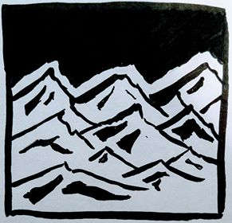
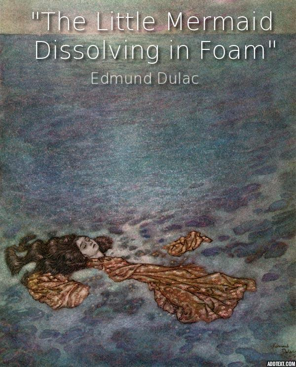

riding seaward on the waves
Janice Xu
rationale
One defining modernist idea is the fixation on the subconscious. The sea represents unconsciousness while the “waves” on the surface represent the more conscious side of Prufrock’s psyche. An iceberg is often associated with different levels of consciousness. In my drawing, the tip of the iceberg above water represent the small interactions he has with conscious reality where he finds little meaning in the world. The notion of using water to represent the subconscious is also seen in modernist literature such as “The Swimmer” where the journey of swimming through the pools was actually Ned diving into his unconsciousness ming. Furthermore, the text uses “them” to refer to the mermaids, or society and women, and can be interpreted to be things that Prufrock regards as shallow and lacking value. This monotone approach to life is an attribute of a modern hero who feels like they live in a world of darkness and is reflected in the dull blue colours of the tip of the iceberg.
Modernists often attempt to fit into society and experiment with art in an attempt to find meaning or a purpose to live aside from simply surviving. Therefore, I drew the iceberg in a cubism style instead of using realism to represent how Prufrock detaches himself from reality and from the mermaids “riding seaward on the waves”. The clashing colours of the iceberg underwater represent his inner battles between acceptance and fantasy, as well as his obsession with women. Once again, Ned shares this modernist characteristic through battling his addiction to alcohol. My drawing can be further extrapolated to represent the stylistic nature of the text. Despite talking about very literal things, the true feelings of Prufrock are found implicitly through water imagery which symbolizes the subconscious, an important modernist concept./p>
combing the white hair
Janice Xu
“It was probably the first time in his adult life that he had ever cried, certainly the first time in his life that he had ever felt so miserable, cold, tired, and bewildered. He could not understand the rudeness of the caterer’s barkeep or the rudeness of a mistress who had come to him on her knees and showered his trousers with tears. He had swum too long, he had been immersed too long, and his nose and his throat were sore from the water. What he needed then was a drink, some company, and some clean, dry clothes, and while he could have cut directly across the road to his home he went on to the Gilmartins’ pool. Here, for the first time in his life, he did not dive but went down the steps into the icy water and swam a hobbled sidestroke that he might have learned as a youth.” (Cheever, “The Swimmer”)
rationale
At this point in the poem, Prufrock is seen at the end of his downward descent in life given by the visual imagery of old age by mentioning the “white hair of the waves”. Because the water represents his own unconsciousness, it can be interpreted as his own hair being combed by the mermaids previously mentioned. Both this text and “The Swimmer” share the theme of decay, a prominent idea in modernism, and the inevitable end to life through heavy references to water. In the passage above specifically, Cheever purposefully uses asyndeton to describe Ned’s feelings with the rapid progression of time through “miserable, cold, tired” (Cheever, “The Swimmer”). He also uses specific diction such as a “hobbled sidestroke” (Cheever, “The Swimmer”) that is similar to Eliot’s use of “white hair” to bring up the idea of aging. Prufrock’s similar experiences with both physical and mental deterioration are therefore paralleled between the texts.
Ned clings to the activities of his youth despite the passage thoroughly describing his inability to perform as vigorously as before. Meanwhile, Prufrock clings onto his lonely fixation on women through his personal fantasies, or reconstructions of reality. This is because he personifies the waves by giving it hair, which is impossible in actuality, but becomes evidence of how he sees the world as having no order. Alternatively, personification is often used to enhance meaning and beauty in poems but it is ironically paired with the mention of “white hair” which enhances uglier imagery of decay. Therefore, like Ned who battles alcohol addiction for example, Prufrock can be seen having an internal battle between the dark reality he knows he is heading for and his personal obsessions with women. In addition to connections regarding the theme of decay, Ned’s characteristics as a modern hero are also seen reflected in Prufrock. This helps readers gain a more intertextual and thorough understanding of this text.
wind blows the water
Jenny Chen
Wind Waves
- Surface waves that occur on free surface of bodies of water.
- Occur when wind blows over an area of fluid surface.
- Wind waves have an attribute of being random; can be described as a stochastic process in combination to the physics of the waves.
Stochastic
- Involving a random variable or chance

Chaos is one of the themes of modernism; the modern world is seen as having no rules, and as a place where anything can happen. When Eliot writes “the wind blows the water”, imagery is formed of waves crashing, seemingly at random. Aside from the physics of waves, the way these waves are created is random; there are no rules or traditions to say how the wind should blow, or how the waves should be formed. When we look at the etymology of the phrase “wind waves”, we see that the creation of them is considered a stochastic process or that there is a degree of randomness in it. Although the overall flow of the water remains the same (just like how society follows the same meaningless routines), the individual waves are random. This reflects how the world depicted by modernism lacks structure and doesn't follow traditional rules/rituals.
The same lack of tradition and rule-breaking is seen in Simon and Garfunkel's song Mrs. Robinson. Although it was renamed to fit the movie The Graduate, the song was first written about Eleanor Roosevelt, but the lyrics in the fifth stanza "Hide it in a hiding place where no one ever goes/ Put it in your pantry with your cupcakes/ It's a little secret, just the Robinsons' affair/ Most of all, you've got to hide it from the kids" can apply to both of them. These lyrics refer to the affairs that both women allegedly had. However, in their time, women were expected to repress their emotions and not let the rest of society see them. In this way, both women were rule-breakers, and Eleanor was even rumoured to be a lesbian, which was much less accepted back then.
white and black
Jenny Chen
white black waves
the up and down,
the ebb and flow,
the monotony of the waves.
it's hypnotizing.
its mind-numbing.
over and over,
the white feeds into the black,
feeds into the white.
oh how i long to see
the colours underneath
rationale
Since I understood the sea and water as a metaphor for the world, I found that the words “white and black” described it in painting a bleak picture of society. It was as if the world were completely colourless. On the surface, society appears to Prufrock as black and white, clearly separated into right and wrong, good and evil: a clearly two-dimensional world. This follows one of the characteristics of the modern hero, who feels as though the world is meaningless. Similarly, in Cheever's The Swimmer, when Cheever's character, Ned, returns to his house at the end of the story, he remarks that "the place was dark" and says that "he was so stupified with his exhaustion that his triumph (swimming the county) seemed vague" (Cheever, "The Swimmer"). Again, the darkness and the lack of colour help to convey the modernist theme that the world and all our actions are insignificant in the long run.
In my poem, I similarly used the water as a metaphor for society. The first stanza in the poem above is written about how the movement of water doesn’t end. This relates to how society never seems to stop. This is especially true as the world becomes more and more advanced. People have continuously looked for ways to improve their productivity, and we’re now reaching a point where many people are simply being busy for the sake of being busy. The lines, “it’s hypnotizing. it’s mind-numbing.” refer to how it can be really easy to be swept up with the rest of the society. Even though you may believe that the world is meaningless at first, as you settle into society’s cycles, they “hypnotize” you into simply continuing without putting more thought into it. Life becomes like the waves; your existence doesn’t stop, but simply continues with no real meaning. The second stanza concludes the thoughts from the first. “The white feeds into the black, feeds into the white” reiterates the idea that each and every activity we do is meaningless since they all lead to the same end. Lastly, we see that the character still holds some hope in the last two lines, “oh how i long to see, the colours underneath.” This means that they still believe that there is still something different in the world, hidden below the surface.
Overall, “white and black” emphasize the modern theme of meaninglessness in Eliot’s poem. Society is depicted as shallow and empty, devoid of colour and excitement. The character Prufrock feels much the same way throughout, always questioning his actions and his reasons for them.
we have lingered
Janice Xu

rationale
In the text, Prufrock suddenly switches from using the pronoun “I” to “we” or the first person plural.This is a prime example of non-linearity, a common characteristic in modernist literature as part of the rise in modernism thought. This is applied both stylistically and content wise as the visual imagery also immediately switches from the surface of the sea to underwater. This inconsistency in perspective is a representation of Prufrock’s conflicted and fragmented mental state. The empty basket drawn represents Prufrock in how he is highly unmotivated and lonely in his urban environment. This is supported by Eliot’s specific diction used such as “lingered” instead of simply “stayed” because the word suggests a reluctance to leave, specifically in terms of leaving his mind and confronting reality. Secondly, the basket was purposefully drawn to be made of glass to reflect Prufrock’s fragile confidence and insecurity towards himself. Finally, the drawing was fragmented to portray the eventual destabilization of his mind. The same can be said about Ned in “The Swimmer” since there are inconsistencies in the passing of time due to his unstable mentality. While Ned views himself as youthful, in reality, he was only in denial of growing old. Therefore, both texts use non-linear storytelling and choose to dive into a character’s psyche which was an important part of modernist literature. In conclusion, the nonlinearity shown in the texts and its connections to the fragmentation of my drawing help highlight the poem’s message in that the world is unordered which is a significant modernist idea.
chambers
Jenny Chen
rationale
When I read the word “chambers”, the first thoughts I had were “enclosed” and “isolated”. In the poem, Prufrock is in the “chambers of the sea”, representing how he feels removed from the rest of the world. This is very similar to how Benjamin Braddock, in the movie The Graduate, feels. The connection is made especially clear in the scuba diving scene of the movie.
Throughout the scene, Benjamin is unable to interact with anyone else there, and when he does speak, his opinions and thoughts are disregarded. His inability to communicate is furthered by Benjamin’s lack of hearing in the scene, showing how he is truly isolated from the rest of the world, even his family. The same goes for Prufrock, who remains in the “chambers of the sea”, away from the rest of the world. This matches up with the modern hero characteristic of having no sense of community, also proving how both Prufrock and Benjamin are examples of a modern hero.
sea
Jenny Chen
The Bridge
By Henry Wadsworth Longfellow
Stanzas 6, 9-10
And like those waters rushing
Among the wooden piers,
A flood of thoughts came o’er me
That filled my eyes with tears.
…
For my heart was hot and restless,
And my life was full of care,
And the burden laid upon me
Seemed greater than I could bear.
But now it has fallen from me,
It is buried in the sea;
And only the sorrow of others
Throws its shadow over me
(Longfellow, “The Bridge by Henry Wadsworth Longfellow”)
rationale
In modern literature, water is used as a symbol for many things. I connected the focus on water in this stanza to the poem The Bridge by Henry Wadsworth Longfellow, another modernist text. In The Bridge, Longfellow uses water to represent the flow of thoughts of his character. In the sixth stanza, he writes, “And like those waters rushing/… A flood of thoughts came o’er me.” This simile comparing a person’s thoughts to water brings to mind the stream of consciousness writing style, which is employed in The Love Song of J. Alfred Prufrock. The style highlights the lack of linearity in both a person’s thoughts and the world. Throughout the poem, Prufrock experiences a jumble of emotions, and never stops too long to focus on any one subject. This depiction of his mind mirrors the modernist representation of society: a medley of ideas with no clear direction.
Later in the poem, in stanzas nine and ten, Longfellow writes about how the character used to carry a heavy burden on himself due to being “full of care”. However, after struggling between remaining with his sorrow and moving on, he eventually buries his “burden” in the ocean and continues on. In this sense, the water is hiding a part of himself from view, the same way Prufrock tries to escape himself by going underwater. This alienation of oneself and self-consciousness is another theme of modernism.
Water also plays a major role in John Cheever's The Swimmer. As the protagonist Ned makes his way swimming through the county's pools, the reader sees how the each pool he visits reveals a little more about himself. The water in this case represents the passage of time and the fluidity of the mind, similar to the poems of Eliot and Longfellow
sea-girls
Janice Xu

rationale
The use of “sea-girls” give more humanistic imagery to better resemble reality, only for Prufrock to end up drowning, or in other words, finally descending into madness after his fruitless search of some meaning in life. This notion of finding value is also reflected in the “The Little Mermaid Dissolving in Foam” by Edmund Dulac. The audience is reminded of the original tale where the mermaid is also given a more human image by sacrificing her voice to obtain human body parts. Dulac uses dark dull colours and a pale face to contrast the eventual decay of the mermaid as she dissolves into foam with the typical glamorous imagery society has of them. Similar to how Prufrock now sees the world as having no order and continues to reconstruct his own reality, the little mermaid also breaks order by going against her mermaid nature. This concept is also connected to “The Sound of Silence”, a song whose lyrics heavily relate to modernist ideas such as disorder. For example, the speaker notices how “words of the prophet are written on subway walls” (Simon, “The Sound”). An originally religious symbol is now just graffiti and therefore, similarly breaks traditional order.
Furthermore, by being mythical creatures, mermaids also represent an escape from reality and freedom for Prufrock. However, Eliot purposefully makes the distinction between mermaids and “sea-girls” to highlight Prufrock’s increasing feelings of being trapped within his own insecurities. This is because he never ends up taking action towards realistically fulfilling his desires due to his highly hesitant and cautious attitude. Similarly, in Dulac’s illustration, the wide expanse of the sea exaggerates how much the little mermaid gave up for pursuing her love which symbolized her life. Therefore, the idea of seeking meaning in a seemingly meaningless world can be better understood through this connection, encouraging readers to think about the implications of both diction and artistic conventions used.
wreathed with seaweed
Janice Xu
Wealthy But Unhappy
By Francis Duggan
He has climbed to highest branch of success tree
And he's a winner everyone agree
But what use to you financial success
If in your heart you know no happiness.
He has built his business up right from the ground
And become the wealthiest man for miles around
But though he is the wealthiest man in town
Unknown to most at heart he does feel down.
In high class bars he drinks with his big wig chums
This man who was raised in the city slums
And he acts happy whilst in their company
And hide from them his sense of misery.
And though he came from a poor family
His boyhood years were happy and carefree
His widowed mother worked to raise her boys
She was good woman kind hearted and wise.
Had she lived on she'd have good things to say
About her eldest son and she'd feel proud of the way
That he reached the very top right from the floor
In her wildest dreams she could not have asked for more.
But despite his wealth he live an unhappy life
And his unhappiness due to his drug addicted wife
From taking drugs she's grown pale and looks sick
And she's doomed to die as her habit she can't kick.
And this goes to show that money doesn't guarantee
You a life of heart ease free of misery
As the wealthy man raised in the slums found out
That happiness can oft times go with 'hand to mouth'.
(Duggan, “Wealthy But Unhappy”)
rationale
Both Prufrock and the speaker in the poem lack a sense of community, one of the key characteristics of a modern hero. The speaker in the poem feels disconnected from society as he “[hides] from them his sense of misery” (Duggan, “Wealthy”), loses his mother, and barely puts up with his wife. To be wreathed can mean to be awarded for one’s accomplishments. The consistent regular rhyme scheme adopted by the poet exudes a monotone tone suggesting a sense of hopelessness for the speaker who does not actually find value in his attainment of wealth. Despite being with company, he merely “acts happy” and feels emotionally alone. Similarly, in the beginning of “The Graduate”, Benjamin’s success is shown through the comments made by his superficial community of friends and family at a party (Kendall, “The Party”). However, it is clear through his meek voice and actions that he does not find the same value in his achievements. Rather, he feels alone despite being surrounded by people. The same feelings of loneliness and personal sense of value are found in Prufrock. In Ancient Greece, wreaths of laurel leaves were used to crown winners of athletic competitions (“Laurel”) but here, the wreath adorned by the narrator is made of seaweed. Therefore, Prufrock is critiquing what society finds meaningful and the superficial value they associate with awards. These external battles against mainstream institutions are another significant part of the modernist movement.
Ironically, the etymology of the word “wreath” comes from the Old English word “writha” meaning to “squirm in pain” (“Wreath”). This is connected to how the speaker of the poem feels miserable with his wealth, how Benjamin feels suffocated by his achievements, and how Prufrock is crippled by his inner anxiety. This apprehension is what ultimately isolates him. Therefore, this connection illuminates an important characteristic of the modern hero in how both speakers lack a sense of community.
human voices wake us, and we drown
Jenny Chen
The Sound of Silence
By Simon and Garfunkel
Hello darkness, my old friend
I've come to talk with you again
Because a vision softly creeping
Left its seeds while I was sleeping
And the vision that was planted in my brain
Still remains
Within the sound of silence
In restless dreams I walked alone
Narrow streets of cobblestone
'Neath the halo of a streetlamp
I turned my collar to the cold and damp
When my eyes were stabbed by the flash of a neon light
That split the night
And touched the sound of silence
And in the naked light I saw
Ten thousand people, maybe more
People talking without speaking
People hearing without listening
People writing songs that voices never share
No one dare
Disturb the sound of silence
"Fools" said I, "You do not know
Silence like a cancer grows
Hear my words that I might teach you
Take my arms that I might reach you"
But my words like silent raindrops fell
And echoed in the wells of silence
And the people bowed and prayed
To the neon god they made
And the sign flashed out its warning
In the words that it was forming
And the sign said "The words of the prophets
Are written on the subway walls
And tenement halls
And whispered in the sounds of silence"
rationale
I found that in the entire stanza, the last line was the most interesting. It implies that Prufrock has been more or less “asleep” or oblivious throughout the poem. In this line, Eliot is suggesting that it is impossible to become truly self-aware.
I related this line to the song lyrics of The Sound of Silence by Simon and Garfunkel, specifically the third and fourth verses. The third verse suggests that everyone around in society simply exists with no real motive. The lines “People talking without speaking/ People listening without hearing” describe how the people complete actions, but don’t accomplish anything. Thus, it seems that what they do holds no value and is meaningless. Instead the society simply decays more and more into complete silence. This connects with how Prufrock feels that his life is insignificant and is also a characteristic of a modern hero: they seek simply to survive, without any exterior motivation.
Additionally, the way the song is sung has meaning as well. The song is first sung softly, but as it progresses, both the guitar and the vocals become louder. However, the very last few lines quickly fade the volume out again. This is a representation of the struggle of escaping society's cycles and becoming something more. The rise in volume corresponds with the singer's call to the others, attempting to wake them up from their silence. This is the same as when Prufrock says "human voices wake us". Afterwards however, the fall shows how despite all their attempts, it's futile in the end, as in The Sound of Silence, the singer's voice dies out again, and Prufrock says in the poem, "we drown".
MLA Citations - Jenny
Cheever, John. “The Swimmer.” The New Yorker, 1964. John Cheever: Collected Stories & Other Writings, 2009.
Goda, Yoshimi. “Overview on the Applications of Random Wave Concept in Coastal Engineering.” Proceedings of the Japan Academy, Series B, vol. 84, no. 9, 2008, pp. 374–385., doi:10.2183/pjab.84.374.
HollywoodWalkofFame. “Graduate SCUBA.” YouTube, YouTube, 31 July 2015, www.youtube.com/watch?v=Rt4_3SHbeU4.
Longfellow, Henry Wadsworth. “The Bridge by Henry Wadsworth Longfellow.” Poetry Foundation, Poetry Foundation, www.poetryfoundation.org/poems/50463/the-bridge-56d22d989abbc.
“Simon & Garfunkel – Mrs. Robinson.” Genius, 5 Apr. 1968, genius.com/Simon-and-garfunkel-mrs-robinson-lyrics.
“Simon & Garfunkel – The Sound of Silence.” Genius, 1 Oct. 1964, genius.com/Simon-and-garfunkel-the-sound-of-silence-lyrics.
“Stochastic.” Merriam-Webster, Merriam-Webster,
www.merriam-webster.com/dictionary/stochastic.
Tolman, H. L. “Practical Wind Wave Modeling.” Water Waves, 2010, doi:10.1142/9789814304245_0006.
MLA Citations - Janice
Cheever, John. “The Swimmer.” The New Yorker, 1964. John Cheever: Collected Stories & Other Writings, 2009.
Duggan, Francis. “Wealthy But Unhappy.” PoemHunter.com, Keltis, 2 Feb. 2008, www.poemhunter.com/poem/wealthy-but-unhappy/.
Dulac, Edmund. “The Little Mermaid Dissolving in Foam.” Artsy Craftsy, Artsy Craftsy, www.artsycraftsy.com/dulac/dulac_foam.html.
Kendall, Laura. “The Party Scene”. Dir. Mike Nichols. Youtube. Youtube, 12 May 2016, www.youtube.com/watch?v=BZDLDYmUXR0.
“Laurel.” Symbols, European Cemeteries Route, symbolsproject.eu/explore/plants-and-vegetations/laurel.aspx.
“Simon & Garfunkel – The Sound of Silence.” Genius, 1 Oct. 1964, genius.com/Simon-and-garfunkel-the-sound-of-silence-lyrics.
“Wreath.” Merriam-Webster, Merriam-Webster, 2018,
www.merriam-webster.com/dictionary/wreath.